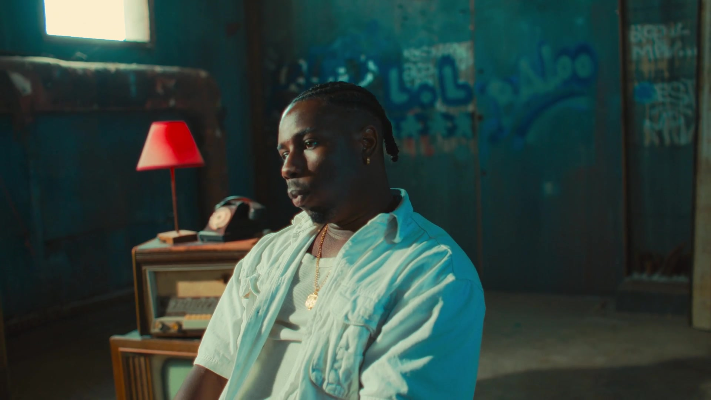

UNE PLATEFORME ÉDITORIALE POUR L'AFRIQUE ET SES DIASPORAS.

— Manifeste
Nous sommes l'écho d'une parole ancienne et la voix d'un siècle nouveau.
Nous portons les récits que d'autres ont voulu taire.
Nous croyons que raconter est un acte politique. Que chaque image, chaque chant, chaque geste est un fragment de mémoire. Que la transmission n'est pas un musée, mais un feu vivant.
Nous filmons celles et ceux que personne ne filme. Nous écrivons en mandingue, en wolof, en peul, en français, en anglais, en silence. Nous mélangeons les langues pour ne plus avoir à choisir.
Nous célébrons les diasporas comme des continents en mouvement. Nous célébrons le retour comme un départ. Nous célébrons celles et ceux qui partent et celles et ceux qui restent.
Nous croyons au temps long, au geste répété, au cinéma de l'attention. Nous croyons à la beauté qui ne se vend pas, et aux images qui ne se publient pas pour plaire.
Nous sommes une plateforme, une famille, une institution éphémère et entêtée. Une boîte à archives. Une scène. Un studio. Un manifeste vivant.
Nous ne demandons pas la permission. Nous prenons la parole — et nous la donnons.
Les Griots Dakar · Marseille · Lagos · Brixton MMXXVI